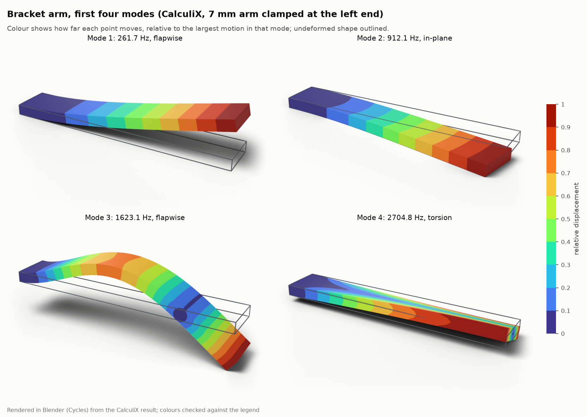
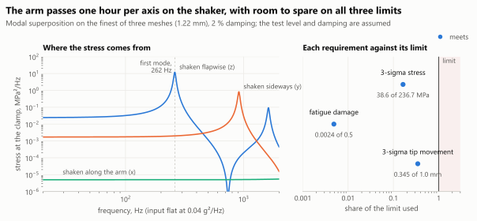
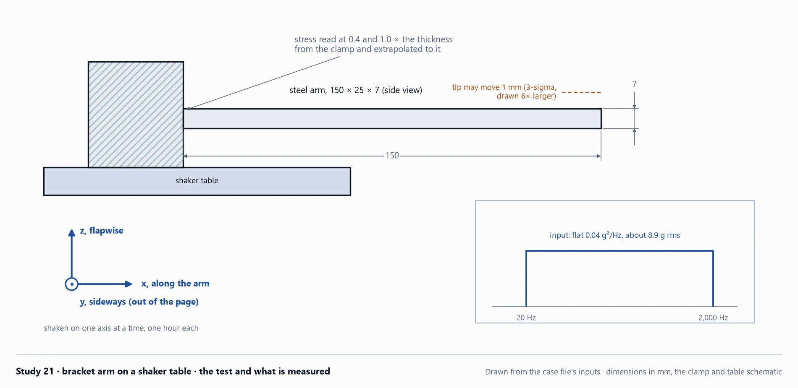
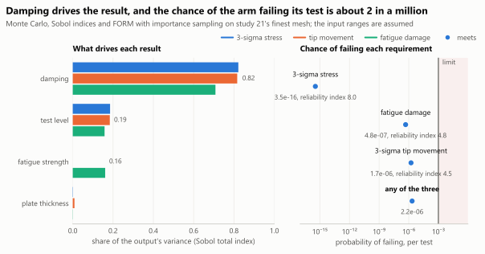
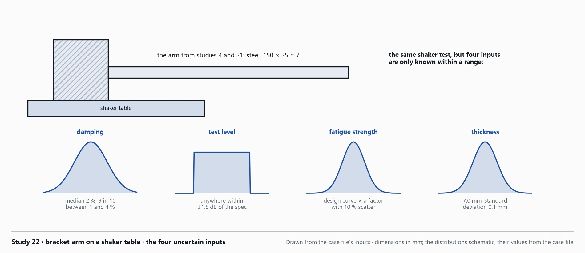

Bracket Arm Vibration, Modal Analysis
The Question
A steel bracket arm, 150 by 25 mm, bolts on near an engine whose second order reaches 200 Hz at 6000 rpm. Its first natural frequency needs to stay above 250 Hz for 25 % separation, and it has to weigh 220 g or less. How thin can it be?
The Answer
7 mm. At 6 mm the first mode drops to 224 Hz, right in the band I'm trying to stay out of. At 8 mm it's 299 Hz, but the arm weighs 236 g and goes over budget. 7 mm is the only whole-millimetre thickness that does both.
The Model
- Part
- A flat steel arm, 150 × 25 mm, clamped at one end. Thicknesses from 5 to 9 mm are tried.
- Material
- Steel: Young's modulus 210 GPa, Poisson's ratio 0.3, density 7850 kg/m³.
- Support
- The whole root face is fixed, an ideal clamp. No mass is attached at the tip.
- Mesh
- Quadratic tetrahedra of 1.95 mm for the thickness sweep; 5 mm down to 1.2 mm for the mesh study.
- Analysis
- Modal (natural frequency) analysis in CalculiX 2.22, first six modes.
- What's measured
- The first natural frequency and the arm's mass. Each mode is identified automatically as flapwise bending, in-plane bending or torsion from how its mass moves.
The case file: recorded assumptions, limits and inputs
This is the study's own record, written before the run and saved with it, in the shorthand of the case file.
cases/bracket_modal_thickness.toml ↗
Steel bracket arm, 150 x 25 mm, clamped at one end, thickness swept from 5 to 9 mm on 1.95 mm quadratic tetrahedra (the mesh study level). Finds the thinnest arm that keeps the first natural frequency above 250 Hz within a 220 g mass budget.
Assumptions, and How Each Is Checked
- Linear elastic steel (E = 210 GPa, nu = 0.3, density 7850 kg/m^3); small-amplitude vibration.
- Ideal rigid clamp over the whole root face. A real bolted joint is softer and lowers the frequencies; this is the main model-form risk.
- No attached mass at the tip (the carried component is light or mounted at the root).
- The beam references assume a slender arm; checked: thickness / length below 0.2.
Limits
- Synthetic geometry and requirement.
- Beam theory is a model-form reference for a 3D clamped solid, especially for in-plane bending (length / width = 6) and torsion (warping restraint).
- No damping, no prestress, no physical test data.
Inputs
| Input | Value |
|---|---|
| length_mm | 150 |
| width_mm | 25 |
| thickness_mm | 7 |
| youngs_modulus_MPa | 210000 |
| poisson_ratio | 0.3 |
| density_t_per_mm3 | 7.85e-09 |
| element_size_mm | 1.95312 |
| n_modes | 6 |
Why It Matters
Every part has natural frequencies at which it likes to vibrate. If something nearby shakes it at one of them, the motion builds up, and a bracket that is strong enough for its static load can still crack from fatigue. An engine is a strong source. Its second order, two pulses per revolution, reaches 200 Hz at 6000 rpm, and it shakes everything bolted nearby. The usual rule is to keep a part's first natural frequency well clear of that, here 25 % above it.
Making the arm thicker raises the frequency but adds mass, so the two requirements pull against each other and only a narrow range of thickness satisfies both.
How It Works
CadQuery builds the arm, Gmsh meshes it and CalculiX extracts the first six modes. A modal analysis has no load: it solves for the shapes and frequencies the part would vibrate at if disturbed.
The order of the modes isn't assumed. For each one the model works out how much of the arm's mass moves in each direction (the effective modal mass), which says whether it's the arm flapping, bending sideways or twisting. That matters because the order changes with thickness, and a requirement on "the first bending mode" has to follow the right one.



How I Checked It
- Against an independent beam model. I built a separate 1D Timoshenko beam model, which includes shear deformation and rotary inertia, and tested it against the textbook frequencies first. It agrees with the 3D bending modes within 0.9 % and with the in-plane mode within 0.4 %. The 3D arm is slightly stiffer, as a wide, fully clamped solid should be.
- Mode shape and mass. The first mode shape matches the beam model almost perfectly, with a modal assurance criterion of 0.99999 (1 is a perfect match). Its effective mass is within 0.002 of the textbook 61.4 % of the arm's mass.
- Torsion. The torsion mode comes out 3.3 % above the simple twisting formula. I expected that, because the clamp stops the root from warping, and I'd predicted it before running.
- Predictions. Every thickness landed within 0.7 to 0.9 % of the values I wrote down before running.
What I Caught Along the Way
- One of my predictions was wrong. The frequencies converged more slowly than the textbook rate, because the clamped corners are singular and that slows convergence everywhere. Slower convergence still gives an honest uncertainty, 0.03 % here. Convergence much faster than the textbook rate would have been the real warning sign, and the checks now flag that automatically.
Limits, and What I'd Do Next
- The clamp is perfectly rigid. A real bolted joint is softer and lowers the frequencies. The margin is 4.7 %, so the joint stiffness is the main risk, and I'd measure or model it before signing this off.
- No attached component mass, damping or prestress. A component hung on the arm would lower the frequency.
- The geometry, the excitation and the mass budget are made up, and there's no test data. A tap test with an accelerometer would check it directly.
Evidence
Run reports, with every check and the saved inputs
Bracket Arm on a Shaker Table, Random Vibration
The Question
The 7 mm arm from study 4 passed its modal target. A qualification test then shakes it on a table with a random acceleration spectrum: flat at 0.04 g²/Hz from 20 to 2,000 Hz, about 8.9 g rms, for one hour on each of the three axes. Does it survive? Three requirements: the 3-sigma stress at the clamp stays below yield divided by 1.5 (236.7 MPa for an S355-type steel); the fatigue damage of the whole test stays below 0.5; and the tip moves less than 1 mm relative to its base, 3-sigma. The spectrum, the 2 % damping, the fatigue detail and the clearance are assumed values, stated as such.
The Answer
Yes, with wide margins. The stress at the clamp is a sixth of its limit and the fatigue damage about a two-hundredth. The tip clearance is the closest of the three, at about a third of the 1 mm allowed. Shaking it flapwise governs: the first bending mode at 262 Hz carries almost all of the response.
The fatigue margin is less comfortable than it looks. The 3-sigma stress range, about 77 MPa, sits just above the fatigue curve's cut-off of 65 MPa for this detail, so most cycles do no damage at all. That also makes the damage very sensitive: 10 % more stress roughly doubles it. Study 22, how robust the pass is, puts numbers on that.

The Model
- Part
- The study 4 arm: steel, 150 × 25 × 7 mm, clamped at the root.
- Material
- Steel: Young's modulus 210 GPa, Poisson's ratio 0.3, density 7850 kg/m³, yield 355 MPa. Fatigue from the EN 1993-1-9 curve for plain rolled plate (detail category 160).
- Test
- A flat input of 0.04 g²/Hz from 20 to 2,000 Hz, one hour per axis, 2 % damping on every mode.
- Mesh
- Quadratic tetrahedra of 3.1, 1.95 and 1.22 mm for the mesh study.
- Analysis
- 30 modes from CalculiX, up to about 53 kHz, then the random response summed over the modes in Python.

The case file: recorded assumptions, limits and inputs
This is the study's own record, written before the run and saved with it, in the shorthand of the case file.
cases/bracket_random_mesh.toml ↗
Study C: study 4's steel bracket arm (150 x 25 x 7 mm, clamped) under a flat 0.04 g^2/Hz base PSD from 20 to 2000 Hz, 1 h per axis, 2 % damping; CalculiX modes and modal stresses, modal superposition in Python; 3 sigma root stress (hot-spot), fatigue damage (Dirlik, EN 1993-1-9 detail 160) and tip displacement; quadratic-tetrahedron mesh 3.125 / 1.95 / 1.22 mm.
Assumptions, and How Each Is Checked
- Linear elastic steel (E 210 GPa, nu 0.3, 7850 kg/m^3); stationary Gaussian base acceleration, one axis at a time; zero mean stress.
- Rigid clamp over the whole root face (as study 4); 2 % modal damping on every mode (synthetic).
- Root stress by surface extrapolation from 0.4 t and 1.0 t (IIW hot-spot rule) applied to each mode; the clamp-corner nodal value is singular and not used.
- Fatigue on the root's axial stress (sigma_xx), the dominant component; Dirlik's range distribution; Miner's sum over the three axes.
Limits
- Synthetic excitation, damping, clearance and S-N detail; no attached component, no bolt-joint flexibility (it would lower the first mode, the main risk, as in study 4).
- No fretting at the clamp edge (the S-N detail is for plain rolled plate).
Inputs
| Input | Value |
|---|---|
| length_mm | 150 |
| width_mm | 25 |
| thickness_mm | 7 |
| youngs_modulus_MPa | 210000 |
| poisson_ratio | 0.3 |
| density_t_per_mm3 | 7.85e-09 |
| element_size_mm | 1.95312 |
| n_modes | 30 |
| damping_ratio | 0.02 |
| psd_g2_per_Hz | 0.04 |
| f_low_Hz | 20 |
| f_high_Hz | 2000 |
| duration_per_axis_s | 3600 |
| yield_MPa | 355 |
| detail_category_MPa | 160 |
| clearance_mm | 1 |
Why It Matters
A frequency check like study 4's only says the arm won't sit on a resonance. Anything mounted near an engine or on a vehicle also sees broadband vibration, and that's what qualification tests reproduce. Random vibration can't be checked with a single load case: the answer is statistical, a stress that's exceeded a known fraction of the time, and fatigue builds up from millions of cycles of different sizes.
How It Works
CalculiX finds the arm's modes, with their stresses and how strongly each one is driven by shaking the base. The random response is then a sum over the modes, one axis at a time: each mode responds to the base acceleration like a damped spring and mass, and the stresses add with their phases. From the response spectra come the rms values, the rms of the full 3D stress state, and the spectral moments the fatigue methods need.
The stress right at the clamp corner is singular: it keeps growing as the mesh is refined. So I use the hot-spot rule for clamped and welded details: read the surface stress at 0.4 and 1.0 times the thickness from the clamp and extrapolate to the clamp line. Fatigue damage comes from two independent methods, Dirlik's and Steinberg's three bands, which agree within 14 %.
How I Checked It
- The solver's own harmonic analysis against my modal sum, at every frequency on all three axes: they agree to one part in a million.
- Miles' equation, exact for a single mode under a flat input, against the first mode's share: 0.1 %, the difference being the ends of the band.
- Effective mass: the kept modes carry at least 93 % of the mass on every axis, so no significant mode is missing.
- The root stress against beam theory, from the bending moment: within 5 %. The rest is the clamp stopping the root from contracting sideways, which a beam doesn't model.
- Mesh study: stress 44.2, 39.8 and 38.6 MPa on the three meshes, mesh uncertainty 1.3 %; tip 0.1 %. Doubling the frequency grid changes the rms values by 0.02 %.
What I Caught Along the Way
- The solver's base excitation isn't the textbook one. The harmonic check first missed by 4 % at resonance and by far more below it. CalculiX reports absolute displacement, and its damping acts on the absolute velocity, base included, which adds a forcing term the textbook equation doesn't have. With that term my sum matches it to one part in a million. The study keeps the physical form and uses CalculiX only as the check.
- A check that ate the memory. On the finest mesh, the output requests from the modal step carried over silently into the three harmonic check steps, so every frequency rewrote the whole mesh: a 16.5 GB result file and 38 GB of memory to read it. The run was stopped, the check steps now write only the tip, and the rerun reproduced the first two meshes to every printed digit.
Limits, and What I'd Do Next
- The test level, damping, fatigue detail and clearance are assumed. Damping matters most, and the uncertainty study running now quantifies it.
- A rigid clamp and no attached mass. A real bolted clamp is softer and would lower the first mode, and a clamp edge frets, which needs a lower fatigue detail than plain plate.
- Gaussian, stationary input, one axis at a time, with no mean stress.
Evidence
How Robust Is the Bracket Arm's Pass?
The Question
Study 21's arm passed its shaker test on nominal inputs. A real project never knows those exactly. How likely is the arm to fail any of its three requirements when four inputs are only known within a range? And which of them is worth measuring first? The ranges, all assumed and stated as such:
- Damping: median 2 %, nine times in ten between 1 % and 4 % (lognormal).
- Test level: within ±1.5 dB of the specified spectrum, the shaker's control tolerance.
- Fatigue strength: the EN 1993-1-9 curve scaled by a factor with 10 % scatter.
- Plate thickness: 7.0 mm with a standard deviation of 0.1 mm, a ±0.3 mm drawing tolerance taken as three standard deviations.
The requirement: the chance of failing any of the three stays below 1 in 1,000.
The Answer
Robust. The chance that the arm fails any of its three requirements is about 2 in a million, some 450 times under the limit. The tip clearance is the closest of the three. Plain sampling never saw a failure in 32,768 tries, which is consistent with a number that small.
Measure the damping first. It drives 71 % of the spread in the fatigue damage and over 80 % of the spread in stress and tip movement. The test level comes second, and the plate thickness hardly matters. To fail any requirement on its own, the damping would have to fall to 0.24 % or below, a quarter of the 1 % that bounds the assumed range from below. A bolted steel bracket shows well over 1 %.
At the 99th percentile the fatigue damage is 0.055 against 0.5, the stress 66 MPa against 237, and the tip 0.59 mm against 1.0.

The Model
- Base model
- Study 21's arm and random-vibration analysis, on its finest mesh (1.22 mm).
- Solves
- Six CalculiX modal solves: five plate thicknesses from 6.5 to 7.5 mm, plus one in between as a check. Damping, test level and fatigue strength enter the random-response sum and the fatigue calculation directly, so the only interpolation is in thickness.
- Statistics
- Monte Carlo with 2,048, 8,192 and 32,768 samples; Sobol sensitivity indices with bootstrap intervals; FORM for each requirement's most likely failure point, then importance sampling around it for probabilities too small for plain sampling.

The case file: recorded assumptions, limits and inputs
This is the study's own record, written before the run and saved with it, in the shorthand of the case file.
cases/bracket_random_uq.toml ↗
Study H: uncertainty on study C's random-vibration qualification of the bracket arm: damping, test level, S-N strength and plate thickness uncertain (synthetic); failure probability of each requirement (FORM, importance sampling, Monte Carlo) and Sobol indices; sample-size sweep 2048 / 8192 / 32768 on study C's 1.22 mm mesh.
Assumptions, and How Each Is Checked
- Study C's model and assumptions (linear elastic, rigid clamp, hot-spot extrapolation, Dirlik on sigma_xx, Miner over three axes).
- Inputs independent; distributions synthetic (approved framing): damping lognormal (median 2 %, 90 % in 1-4 %), test level uniform +-1.5 dB, S-N factor lognormal (median 1, CoV 10 %), thickness normal (7.0, sd 0.1 mm).
- The same damping on every mode (one random variable); thickness changes the whole arm uniformly.
Limits
- Synthetic input distributions: the answer is conditional on them; correlations (e.g. damping between modes) not modelled.
- Model-form uncertainty (clamp stiffness, the S-N detail itself) is outside this study; study C's mesh error (1.3 % on stress) is not sampled.
- pf_any is an upper bound (the sum over requirements, which are strongly correlated through damping).
Inputs
| Input | Value |
|---|---|
| length_mm | 150 |
| width_mm | 25 |
| thickness_mm | 7 |
| youngs_modulus_MPa | 210000 |
| poisson_ratio | 0.3 |
| density_t_per_mm3 | 7.85e-09 |
| element_size_mm | 1.2207 |
| n_modes | 30 |
| damping_ratio | 0.02 |
| psd_g2_per_Hz | 0.04 |
| f_low_Hz | 20 |
| f_high_Hz | 2000 |
| duration_per_axis_s | 3600 |
| yield_MPa | 355 |
| detail_category_MPa | 160 |
| clearance_mm | 1 |
| damping_sigma_ln | 0.42138 |
| test_level_tolerance_dB | 1.5 |
| sn_factor_cov | 0.1 |
| thickness_sd_mm | 0.1 |
| damage_limit | 0.5 |
| n_samples | 2048 |
| seed | 1 |
Why It Matters
A pass on nominal inputs says nothing about how close the design is to the edge. Margins on each input stacked up by hand get very conservative very fast. A probabilistic study answers two questions a project actually asks: how likely is this to fail, and which measurement would reduce that uncertainty most? Here the answer is the damping, which a quick tap test on the first part could pin down.
How It Works
Each sample draws the four inputs, runs the random-response sum and fatigue calculation, and checks the three requirements. Thickness changes the modes, so the modal results are solved at five thicknesses and interpolated between them. The thicknesses are made by scaling one mesh through its thickness, not by remeshing: remeshing added a 1 % scatter to the stress, which the fatigue calculation amplified to 5 %.
Sobol indices split the variance of each result between the inputs. For the probability of failing, sampling alone can't reach numbers like 2 in a million, so FORM finds the most likely combination of inputs that just fails, and importance sampling concentrates samples around it to get the probability.
How I Checked It
- The interpolation against direct solves. At a thickness between the grid points, the stress and tip match a direct CalculiX solve within 1.1 × 10⁻⁴, the damage within 3.6 × 10⁻⁴.
- The nominal point reproduces study 21 to rounding.
- The statistics code against exact answers. A linear case with a known failure probability, and functions with known Sobol indices, are unit tests.
- Two methods for the failure probability. FORM and importance sampling agree within a factor of 1.8 on every requirement, which is normal for small probabilities; the importance-sampling scatter is 2.6 %, and plain Monte Carlo is consistent with both.
- Sample-size convergence. The Sobol indices move by 0.002 from 8,192 to 32,768 samples, with intervals of ±0.012.
- Predictions before the run. Five of six held. The fatigue reliability index came in at 4.82 against a predicted 4.9 to 5.2.
What I Caught Along the Way
- Remeshing noise posing as a thickness effect. The first version remeshed the arm at each thickness. The stress picked up a 1 % scatter from the meshes alone, and because the damage rises steeply with stress near the fatigue cut-off, that became 5 % in the damage. Scaling one mesh through the thickness removed it.
Limits
- Every input range is assumed. The probability is only as good as the damping range, which is why the answer is to measure it.
- One damping value for all modes; the clamp's stiffness and fretting aren't uncertain inputs here, and study 21's limits still apply.
- The thickness is uniform over the plate.
- The failure probability adds the three requirements' probabilities, an upper bound on the chance of failing any of them.